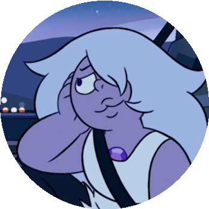

Third Situation
Even with her movements limited by her feelings, she manages to defend herself, but doesn't see the possibility of winning this duel. However, when she least expects it, Steven rushes into the room, and starts encouraging Amethyst, saying that her imperfections make her perfect. And then amethyst:
